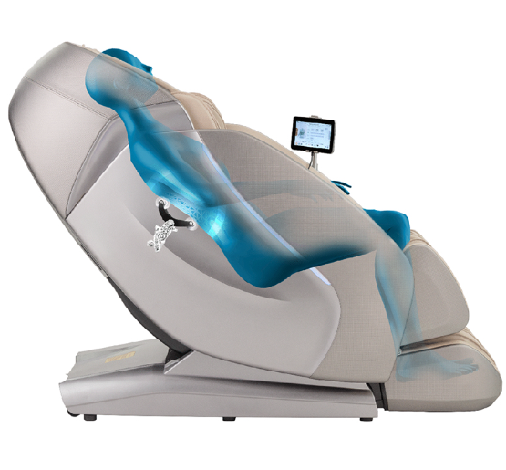

This $11,999 AI Massage Chair Scans You Before It Squeezes You.

For $11,999, the Kyota Hatsumei M900 AI 4D Massage Chair does not simply give you a massage — it conducts an assessment. With patented AI TrueFit® body scanning, it maps your spine like it’s preparing a medical thesis, then deploys a 4D mechanism that moves up, down, left, right, in, out, and at variable speeds. Three dimensions were apparently too basic. This is a chair that wants to understand you before it compresses you.

It includes 56 air cells across 28 airbags, dual reflexology rollers for your feet, calf oscillation kneading, lumbar heat, Zero Gravity recline, Zero Wall Fit™ space-saving tech, and an AI Custom Massage Generator. You can command it with your voice. You can save massage profiles to memory. It auto-extends the footrest using sensors. At this point, the only thing it doesn’t do is ask about your childhood. The marketing copy says it “learns and adapts.” Which means your chair may now know more about your lower back than your doctor.
And honestly? It probably feels incredible. The L-Track runs from neck to glutes like a luxury monorail
for tension. The foot rollers target “vital pressure points.” There are 20 choreographed programs, implying
someone carefully directed your future relaxation like a Broadway performance. Is it overkill? Absolutely.
Is it the most technologically overqualified way to relax in your own living room? Also yes.
If you’d like to meet your new AI wellness supervisor, here it is:
kyotamassagechairs.com/massage-chairs